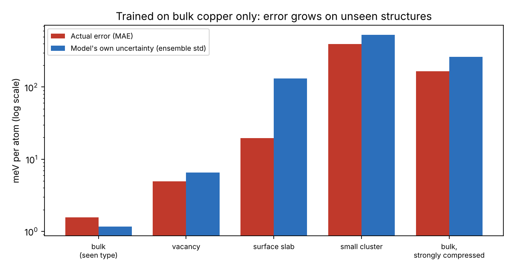
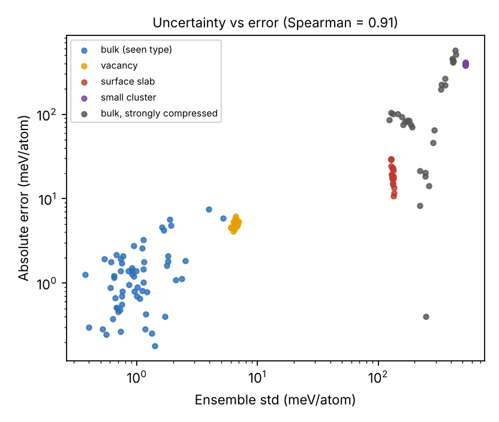

When can you trust a machine-learned potential? A toy test
Raja Ahmad Mahmood · a small learning project, built to understand one problem from the field of atomistic simulation.
The question
Accurate quantum calculations (DFT) are too slow for long simulations. A machine-learned interatomic potential (MLIP) is a neural network trained on DFT-like data that predicts the energy of a set of atoms much faster. The risk is that it is only reliable on atom arrangements similar to its training data. This project tests that on a toy system and checks whether the model can tell when it is out of its depth.
Setup
- Ground truth: ASE's EMT potential for copper, a cheap stand-in for DFT.
- Training data: 300 bulk copper cells with random lattice constants and random atomic displacements. Bulk only.
- Model: Behler-Parrinello-style symmetry-function descriptors (radial and angular), fed to an ensemble of 8 small neural networks that predict energy per atom.
- Tests: new bulk cells (same type as training), a vacancy, a surface slab, a small cluster, and strongly compressed bulk (none seen in training).
- Uncertainty: the standard deviation across the 8 networks.
Result 1: error grows on structures the model has not seen

Result 2: the ensemble disagreement tracks the error

| Test set | n | MAE (meV/atom) | Ensemble std (meV/atom) |
|---|
Limits of this toy
EMT is a simple analytic model, not DFT, and the system is one element. The network predicts energy per atom from descriptors averaged over atoms, not a sum of per-atom contributions, and it does not predict forces. Each test set is small, and the cluster and vacancy sets are one structure type with small random displacements, so they are not a broad sample. The uncertainty is useful as a warning here, but it overestimates the error on the surface slab, so it is a warning signal, not a calibrated error bar. The first training run used a different optimizer (Adam) and converged poorly; I switched to L-BFGS and kept that result.
Code
mlip_demo.py runs the experiment in about 20 seconds; make_figures.py draws the figures. Install with pip install ase scikit-learn scipy matplotlib.